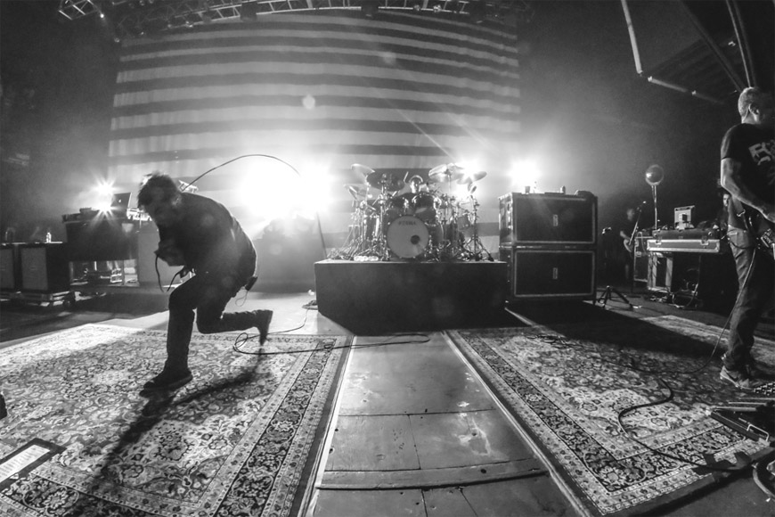

es una banda estadounidense de metal alternativo formada en Sacramento, California, en el año 1988. Sus integrantes son Chino Moreno (vocalista), Stephen Carpenter (guitarrista), Abe Cunningham (baterista), Sergio Vega (bajista) y Frank Delgado (samplers). El bajista original de la banda era Chi Cheng, quien quedó en coma después de un accidente en el 2008, y murió en el 2013. Desde su formación, la banda ha lanzado ocho álbumes de estudio, dos EP, un álbum recopilatorio y once sencillos, además de un box set que incluye todos sus álbumes. La banda cuenta con un disco de oro y tres discos de platino.1
